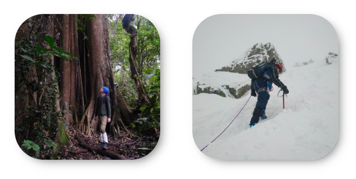
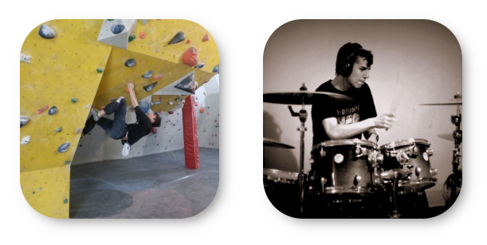

O MNIE
Nazywam się Mateusz Iwańczuk. W 2018 r. ukończyłem studia I stopnia na Uniwersytecie Gdańskim na kierunku Iberystyka. Komunikuję się w języku hiszpańskim, angielskim, francuskim i portugalskim. Obecnie uczestniczę w kursie Junior Front-end Developer w akademii infoShare. Aktywnie uczę się programowania w językach html, CSS i JavaScript, ponieważ wiążę swoją przyszłość z branżą IT. Dotychczas pracowałem dorywczo, sprawdzając się w różnych dziedzinach. Pomagałem przy montażu instalacji odwadniających w gdyńskiej stoczni, byłem młodszym specjalistą ds. obsługi klienta w sekcji francuskojęzycznej, a także udzielałem korepetycji z języków obcych. W wolnym czasie prowadzę bloga podróżniczego o nazwie Podróże MM. Moją witrynę odwiedza każdego dnia od 500 do 2000 osób. Na Facebooku bloga śledzi obecnie ponad 2500 użytkowników.
W WOLNYM CZASIE
 